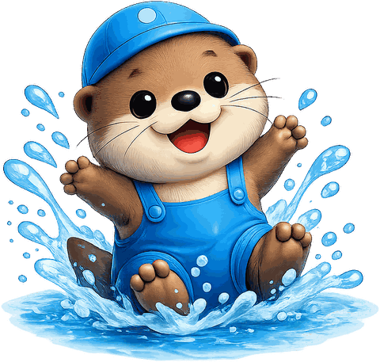

잠시 앉아서, 사람들과 나 사이의
거리를 함께 들여다봅니다.
누구에게나 두 마음이 함께 있습니다.
누군가와 같이 있고 싶은 날, 혼자이고 싶은 날.
이 검사는 그 비율을 72개의 문장으로 살펴봅니다. 정답은 없습니다.
약 10분이 걸립니다.
결과지를 보내드리기 위해 필요합니다.
한 화면에 한 문장씩 나옵니다. 문장을 읽고 지금의 나에게 가장 가까운 쪽을 고르면 다음으로 넘어갑니다.
가까운 사람을 떠올려 주세요. 연인, 친구, 가족 누구여도 좋습니다. 지금 없다면 예전에 가까웠던 사람이어도 됩니다.
오래 고민하지 마세요. 처음 떠오른 답이 가장 정확합니다. 되돌아가고 싶으면 뒤로 버튼을 누르면 됩니다.
잠시만 기다려 주세요.

72개의 문장에 답해 주셨습니다.
입력해 주신 내용을 바탕으로 추후 '나만의 리포트'를 받아보실 수 있습니다. 남은 시간 동안 다른 부스들도 편안하게 둘러보세요!
네트워크를 확인하고 다시 시도해 주세요.
응답은 그대로 남아 있습니다.